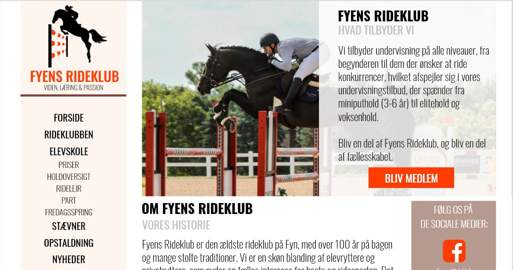
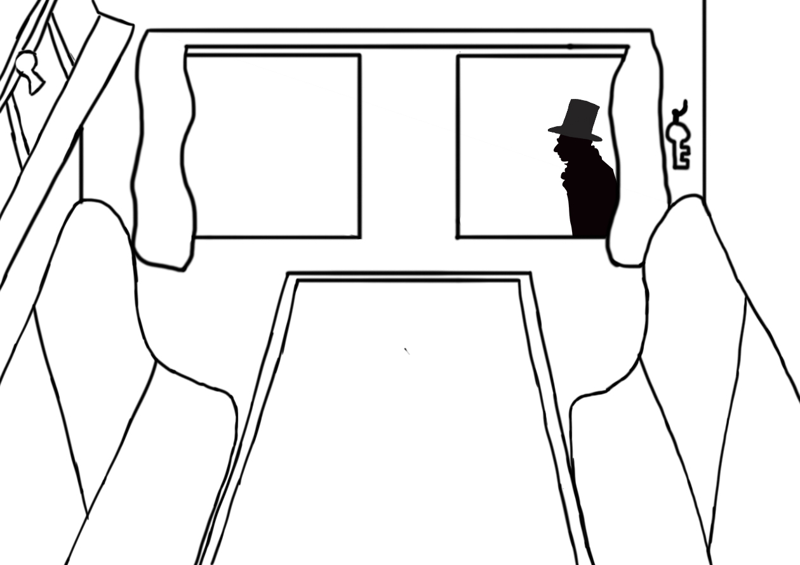
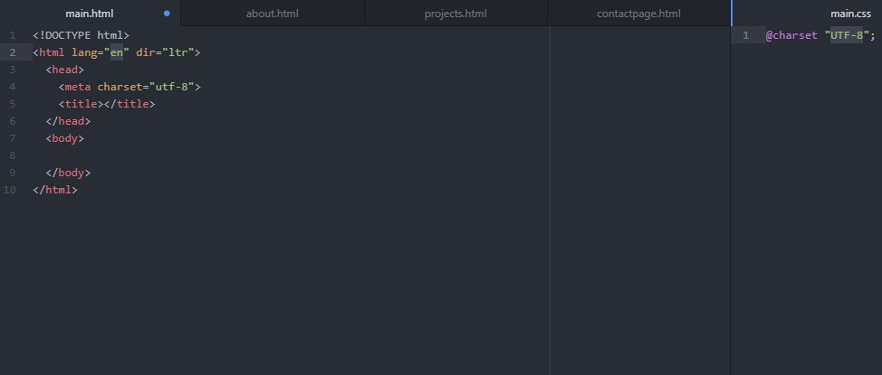
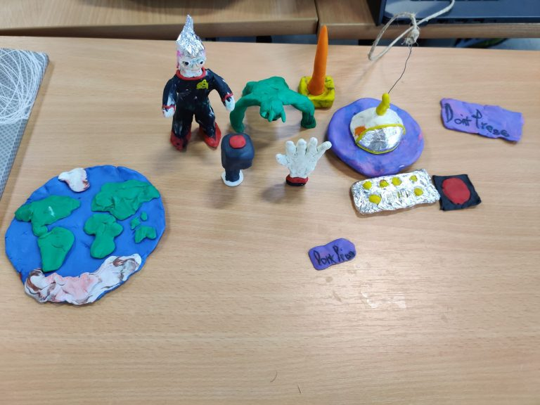
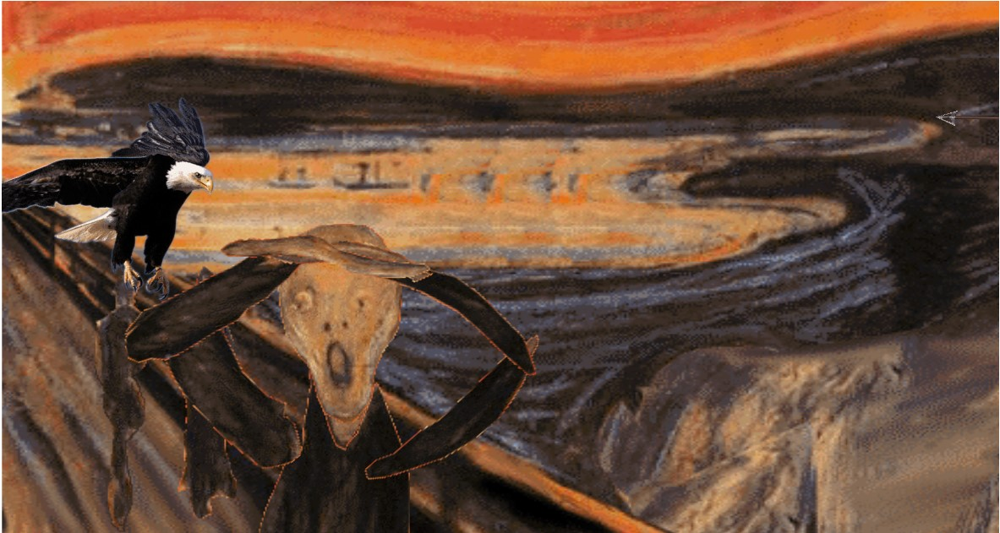
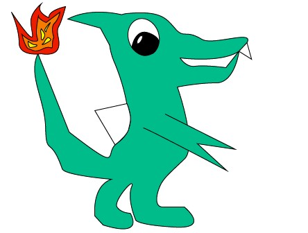

My projects
These are the following projects I've working with this semester and there'll be more to come!
Project 1 - Redesign
In this project I had to make a redesign of a specific website with a group. In this case it was Fyens Rideklub. Their website was in dire need of a redesign. We did a complete overhaul and gave them a new identity
Project 2 - H.C. Andersen museum
In this project I had to make an installation for the H.C. Anderses museum. We did a lot of research, so we could relate more to them and made something we thought would be optimal the user base that we chose.
Project 3 - Coding a website
In this project I coded a whole website from scratch. I had to find out, what things I can do and what i needed to learn more than the ordinary.
Stop Motion
This was the first work I did in Odense. The group and I started on an idea and worked with that. We worked with props and adobe programs. We recorded what we had made and made some sounds to it afterwards to make it more authentic.
Animating a painting
Here I chose a painting to work with. I made some tweeking to the painting I chose so i could animate the specific objects in the painting
Animation in coding
I learned how to make an animation in code form. I made a picture with the different frames and used HTML5 and CSS3 to connect the dots, so it made the animation
